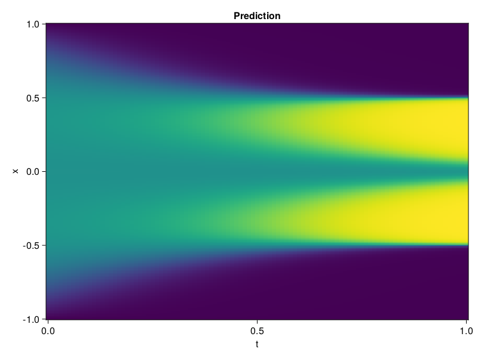

Allen-Cahn Equation with Sequential Training
In this tutorial we are going to solve the Allen-Cahn equation with periodic boundary condition from $t=0$ to $t=1$. The traning process is split into four stages, namely $t\in [0,0.25]$, $t\in [0.0,0.5]$, $t\in [0.0,0.75]$ and $t\in [0.0, 1.0]$.
using ModelingToolkit, IntervalSets
using Sophon
using Optimization, OptimizationOptimJL
@parameters t, x
@variables u(..)
Dₓ = Differential(x)
Dₓ² = Differential(x)^2
Dₜ = Differential(t)
eq = Dₜ(u(x, t)) - 0.0001 * Dₓ²(u(x, t)) + 5 * u(x,t) * (abs2(u(x,t)) - 1.0) ~ 0.0
domain = [x ∈ -1.0..1.0, t ∈ 0.0..0.25]
bcs = [u(x,0) ~ x^2 * cospi(x),
u(-1,t) ~ u(1,t)]
@named allen = PDESystem(eq, bcs, domain, [x, t], [u(x, t)])\[ \begin{align} - 0.0001 \frac{\mathrm{d}^{2}}{\mathrm{d}x^{2}} u\left( x, t \right) + 5 \left( -1.0 + \left|u\left( x, t \right)\right|^{2} \right) u\left( x, t \right) + \frac{\mathrm{d}}{\mathrm{d}t} u\left( x, t \right) =& 0.0 \end{align} \]
Then we define the neural net, the sampler, and the training strategy.
chain = FullyConnected(2, 1, tanh; hidden_dims=16, num_layers=4)
pinn = PINN(chain)
sampler = QuasiRandomSampler(500, (300, 100))
strategy = NonAdaptiveTraining(1, (50, 1))
prob = Sophon.discretize(allen, pinn, sampler, strategy)OptimizationProblem. In-place: true
u0: ComponentVector{Float64}(layer_1 = (weight = [1.6486307382583618 -1.6823766231536865; -1.7339290380477905 0.1588507443666458; … ; -0.9225881099700928 -0.8783525228500366; -0.3827434778213501 -0.547968864440918], bias = [0.0; 0.0; … ; 0.0; 0.0;;]), layer_2 = (weight = [-0.03517061099410057 0.4353942275047302 … -0.4799956679344177 -0.11036790162324905; 0.3871845304965973 0.5484148263931274 … -0.1425134539604187 0.5958631634712219; … ; -0.712485134601593 -0.28467968106269836 … -0.6938840746879578 0.5426965355873108; -0.5272884964942932 -0.47764208912849426 … -0.567959189414978 -0.24790836870670319], bias = [0.0; 0.0; … ; 0.0; 0.0;;]), layer_3 = (weight = [0.4427243173122406 -0.21181102097034454 … 0.45603111386299133 0.36358126997947693; -0.6602334976196289 0.009874568320810795 … 0.11962338536977768 -0.5634046792984009; … ; 0.4622272253036499 -0.6661561131477356 … 0.56004798412323 -0.6362117528915405; 0.37933334708213806 0.32512664794921875 … 0.6991521716117859 -0.6642277836799622], bias = [0.0; 0.0; … ; 0.0; 0.0;;]), layer_4 = (weight = [-0.4198445677757263 -0.5959566831588745 … 0.5116791129112244 0.5336436033248901; -0.41205376386642456 -0.36843353509902954 … -0.6738231182098389 -0.508581817150116; … ; 0.18923358619213104 -0.5852076411247253 … -0.24699419736862183 0.12819628417491913; -0.33171239495277405 -0.5678011178970337 … 0.44537925720214844 0.3875734806060791], bias = [0.0; 0.0; … ; 0.0; 0.0;;]), layer_5 = (weight = [-0.03684306889772415 -0.2303207814693451 … -0.02337099239230156 -0.6263019442558289], bias = [0.0;;]))We solve the equation sequentially in time.
function train(allen, prob, sampler, strategy)
bfgs = BFGS()
res = Optimization.solve(prob, bfgs; maxiters=2000)
for tmax in [0.5, 0.75, 1.0]
allen.domain[2] = t ∈ 0.0..tmax
data = Sophon.sample(allen, sampler)
prob = remake(prob; u0=res.u, p=data)
res = Optimization.solve(prob, bfgs; maxiters=2000)
end
return res
end
res = train(allen, prob, sampler, strategy)u: ComponentVector{Float64}(layer_1 = (weight = [2.5626511839877923 -1.761357451200636; -2.3642613873666516 0.3906772218904008; … ; -1.070296408873073 -0.9318762102263694; -1.1091466872678997 -0.2182176389506207], bias = [0.6901199186001161; 0.43376681844082865; … ; 0.06277038067941244; -0.5115375883301009;;]), layer_2 = (weight = [0.3192549585293509 0.5563279106889525 … -0.2885048532008142 0.06581071278443212; 0.44781863232243624 0.3582742768207596 … -0.09816111038312893 0.6378655917386468; … ; -0.11878962097001348 -0.5779587666719197 … -0.7610253486505446 0.40620648290684774; -0.7346427049778856 -0.804539569836528 … -0.742886742154829 -0.290980951168409], bias = [0.8545689212521715; 0.45126975061683644; … ; 0.5309483465870809; 0.0407463721336028;;]), layer_3 = (weight = [0.381810634579177 -1.006366278437503 … 0.44751003135930356 0.4963204943319728; -0.9606206880777757 0.25720462476983985 … 0.1167919076028118 -0.583622628618235; … ; 0.5060957707790484 -0.34341678661602404 … 0.0717677548021113 -0.8040268485501998; 0.6096034926003903 0.6129221921479494 … 1.0601750901262554 -1.6713174628915082], bias = [0.09590636526268237; -0.19684938538097846; … ; -0.14631924840194974; 0.7843291458249491;;]), layer_4 = (weight = [-0.5730065522682858 -0.6792835774981183 … 0.47909808511707475 1.1975766300561475; -0.34780765347567744 -0.5344308288622993 … -0.2639861449425943 -0.6747709956190808; … ; 0.2953212354084518 -0.5118274719651493 … -0.3294808746089741 -0.3132034647530355; -0.4218587798089834 -0.8146268808965801 … 0.3547064635485088 0.3758540850869166], bias = [0.05878606696608933; 0.08354970916949349; … ; 0.01557860100271187; 0.37820322843128834;;]), layer_5 = (weight = [0.10333817236824096 -0.07911634307318303 … 0.08200213068706048 -0.4871750868532894], bias = [-0.10543147838169814;;]))Let's plot the result.
using CairoMakie
phi = pinn.phi
xs, ts = [infimum(d.domain):0.01:supremum(d.domain) for d in allen.domain]
axis = (xlabel="t", ylabel="x", title="Prediction")
u_pred = [sum(pinn.phi([x, t], res.u)) for x in xs, t in ts]
fig, ax, hm = heatmap(ts, xs, u_pred', axis=axis)